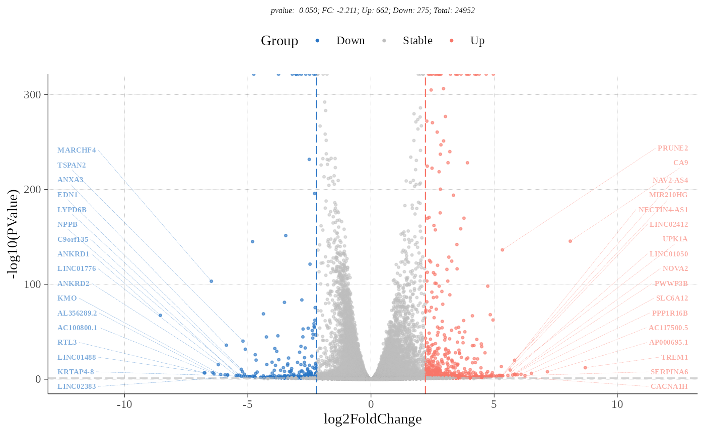

visualization_deg_volcano
Source:vignettes/visualization_deg_volcano.Rmd
visualization_deg_volcano.Rmd
library(RNAseqStat)
#> RNAseqStat::enhance_volcano can make a volcano from DEG data frame which contains log Fold Change and P value.
enhance_volcano(DEG_df,x = 'log2FoldChange', y = 'pvalue')
#> Down 275
#> Stable 24015
#> Up 662 Show more top genes.
Show more top genes.
enhance_volcano(DEG_df,x = 'log2FoldChange', y = 'pvalue',top = 20)
#> Down 275
#> Stable 24015
#> Up 662
#> Warning: ggrepel: 3 unlabeled data points (too many overlaps). Consider
#> increasing max.overlaps
#> Warning: ggrepel: 3 unlabeled data points (too many overlaps). Consider
#> increasing max.overlaps
highlight special gene
enhance_volcano(DEG_df,x = 'log2FoldChange', y = 'pvalue', highlight = c("KRT80","ALPP"))
#> Down 275
#> Stable 24015
#> Up 662